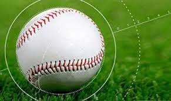
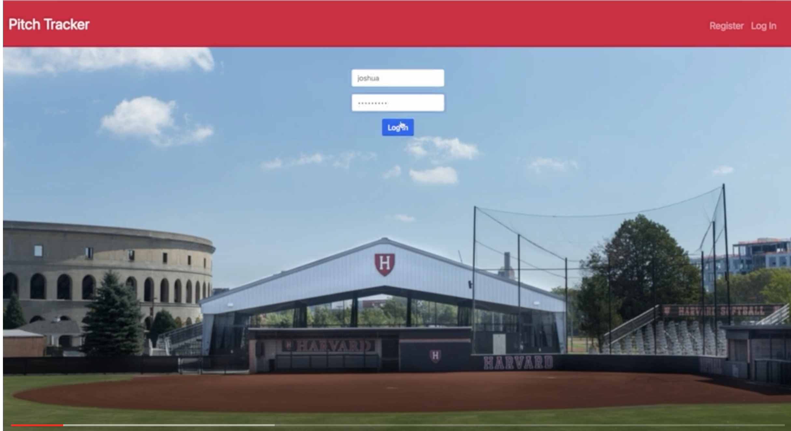

December 13, 2023
I used R to determine whether Left Handed Hitters have an advantage with being closer to first base. I looked at on base percentages, batting averages, and number of double plays to debunk the myth that Lefties hit better off of Right Handed Pitchers, but also reveal that being closer to first base does have a significant advantage in disrupting double plays. To learn more click, View Project.

Designing an automated speech recognition system that allows soldiers to verbalize treatment plans into their headset for the injured and wounded. The system then fills out a casualty report for the medic, streamlining communication and detailing treatments the patient has already received so that medical personnel can quickly create care plans

Designed a website using Javascript, HTML, and Python that tracks and stores pitch counts. This information is updated live in-game, but the user can also look at datasheets for previous games, so that the hitters know what the pitcher’s tendencies are